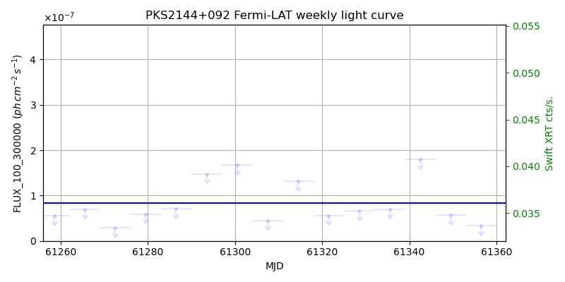
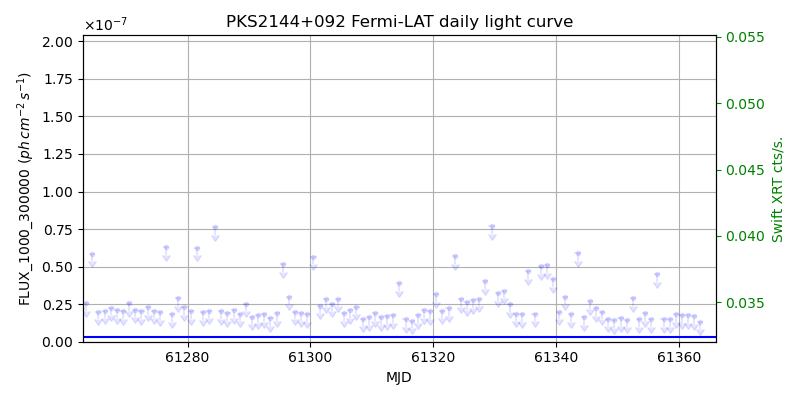

LAT Lightcurve site: https://fermi.gsfc.nasa.gov/ssc/data/access/lat/msl_lc/source/PKS_2144p092
Swift site: https://www.swift.psu.edu/monitoring/source.php?source=PKS2144+092
NED: Query
Time of last update of this page: UT: 2026-11-28 16:28 (MJD: 61372.686)
| Property | Value |
|---|---|
| R.A. | 21:47:10.08 |
| Dec. | 9:29:45.6 |
| z | 1.113 |
| 3FGL SpectrumType | LogParabola |
| 3FGL PL Index | |
| 3FGL Flux_100_300000 | 8.37e-08 1 / (s cm2) |
| 3FGL Flux_1000_300000 | 3.03e-09 1 / (s cm2) |
| 3FGL Flux >200 GeV | 1.45e-13 1 / (s cm2) |
| 3FGL Extrap. Crab >200 GeV | 0.00 |
| 3FGL Flux After EBL Absorption >200GeV | 1.90e-15 1 / (s cm2) |
| 3FGL EBL Crab Fraction >200GeV | 0.00 |
| MJD | dMJD | Flux | dFlux | Frac3FGL | FracCrab>200GeV | EBLFracCrab>200GeV |
|---|---|---|---|---|---|---|
| 61367.50 | 0.50 | 1.75e-07 | 0.00e+00 | 0.00 | 0.00 | 0.00 |
| 61368.50 | 0.50 | 7.03e-08 | 0.00e+00 | 0.00 | 0.00 | 0.00 |
| 61369.50 | 0.50 | 1.36e-07 | 0.00e+00 | 0.00 | 0.00 | 0.00 |
| 61370.50 | 0.50 | 8.27e-08 | 0.00e+00 | 0.00 | 0.00 | 0.00 |
| 61371.50 | 0.50 | 6.42e-08 | 0.00e+00 | 0.00 | 0.00 | 0.00 |

| MJD | dMJD | Flux | dFlux | Frac3FGL | FracCrab>200GeV | EBLFracCrab>200GeV |
|---|---|---|---|---|---|---|
| 61335.50 | 3.50 | 6.99e-08 | 0.00e+00 | 0.00 | 0.00 | 0.00 |
| 61342.50 | 3.50 | 1.79e-07 | 0.00e+00 | 0.00 | 0.00 | 0.00 |
| 61349.50 | 3.50 | 5.67e-08 | 0.00e+00 | 0.00 | 0.00 | 0.00 |
| 61356.50 | 3.50 | 3.35e-08 | 0.00e+00 | 0.00 | 0.00 | 0.00 |
| 61363.50 | 3.50 | 2.62e-08 | 0.00e+00 | 0.00 | 0.00 | 0.00 |

| MJD | dMJD | Flux | dFlux | Frac3FGL | FracCrab>200GeV | EBLFracCrab>200GeV |
|---|---|---|---|---|---|---|
| 61367.50 | 0.50 | 2.57e-08 | 0.00e+00 | 0.00 | 0.00 | 0.00 |
| 61368.50 | 0.50 | 1.46e-08 | 0.00e+00 | 0.00 | 0.00 | 0.00 |
| 61369.50 | 0.50 | 1.45e-08 | 0.00e+00 | 0.00 | 0.00 | 0.00 |
| 61370.50 | 0.50 | 1.07e-08 | 0.00e+00 | 0.00 | 0.00 | 0.00 |
| 61371.50 | 0.50 | 1.11e-08 | 0.00e+00 | 0.00 | 0.00 | 0.00 |

| MJD | dMJD | Flux | dFlux | Frac3FGL | FracCrab>200GeV | EBLFracCrab>200GeV |
|---|---|---|---|---|---|---|
| 61335.50 | 3.50 | 1.12e-08 | 0.00e+00 | 0.00 | 0.00 | 0.00 |
| 61342.50 | 3.50 | 9.24e-09 | 0.00e+00 | 0.00 | 0.00 | 0.00 |
| 61349.50 | 3.50 | 2.54e-09 | 0.00e+00 | 0.00 | 0.00 | 0.00 |
| 61356.50 | 3.50 | 6.37e-09 | 0.00e+00 | 0.00 | 0.00 | 0.00 |
| 61363.50 | 3.50 | 3.41e-09 | 0.00e+00 | 0.00 | 0.00 | 0.00 |
--------------------------------------------------------- Using user-supplied coords: 21:47:10.08 9:29:45.6 2000 --------------------------------------------------------- FLWO UT night of: 2026-11-29 Local Sid. @ Midnight: 04:08 Sunset (-15.0) (local, UT): 18:31 01:31 Sunrise (-15.0) (local, UT): 05:53 12:53 Moonrise (local, UT): 21:57 04:57 Moonset (local, UT): Moon phase: 0.72 --------------------------------------------------------- AzTime LSID UT Obj_el Obj_az Mn_el Mn_az Sep. --------------------------------------------------------- 18:31 22:39 01:31 65.0 210.9 -32.9 32.1 147.9 19:01 23:09 02:01 61.1 224.8 -29.4 38.9 148.1 19:31 23:39 02:31 56.1 235.5 -25.4 45.0 148.4 20:01 00:09 03:01 50.6 243.8 -21.0 50.6 148.6 20:31 00:39 03:31 44.7 250.5 -16.2 55.6 148.8 21:01 01:09 04:01 38.6 256.1 -11.1 60.2 149.1 21:31 01:39 04:31 32.3 260.9 -5.4 64.5 149.3 22:01 02:09 05:01 26.0 265.3 0.4 68.5 149.5 22:31 02:39 05:31 19.6 269.4 5.8 72.2 149.7 23:01 03:10 06:01 13.2 273.3 11.6 75.8 149.9 23:31 03:40 06:31 6.9 277.1 17.5 79.4 150.0 00:01 04:10 07:01 0.9 281.0 23.6 82.9 150.2 00:31 04:40 07:31 -5.5 285.0 29.7 86.5 150.4 01:01 05:10 08:01 -11.9 289.3 35.8 90.3 150.5 01:31 05:40 08:31 -17.8 293.9 42.0 94.4 150.7 02:01 06:10 09:01 -23.6 298.9 48.1 99.1 150.8 02:31 06:40 09:31 -29.0 304.5 54.2 104.7 151.0 03:01 07:10 10:01 -34.1 310.9 60.1 111.7 151.2 03:31 07:40 10:31 -38.6 318.1 65.6 121.1 151.3 04:01 08:10 11:01 -42.6 326.4 70.5 134.7 151.5 04:31 08:40 11:31 -45.7 335.8 74.0 154.7 151.6 05:01 09:11 12:01 -47.7 346.2 75.2 181.1 151.8 05:31 09:41 12:31 -48.7 357.2 73.6 206.8 152.0 05:53 10:02 12:53 -48.6 5.4 71.0 221.2 152.1 --------------------------------------------------------- Dark hours >55 deg.: 1.11 srcstart (UT): 2026-11-29 01:31 srcend (UT): 2026-11-29 02:37